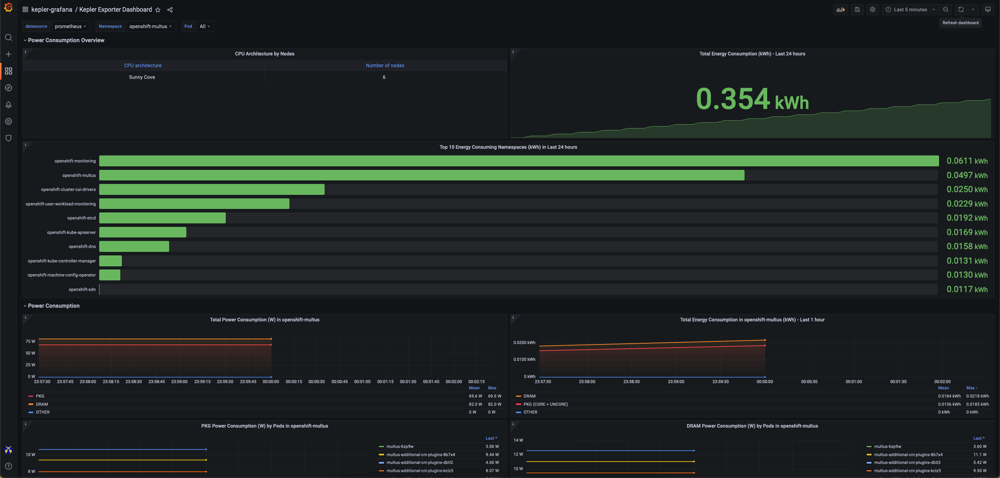

通过Kepler Operator在Kind上安装
需求:
在开始前请确认您已经安装了:
kubectl- 下载了
kepler-operatorrepository - 目标k8s集群。您可以使用Kind来简单构建一个本地k8s集群来体验本教程。local cluster for testing, 或直接在您远端的k8s集群执行。注意您的controller将会自动使用当前的kubeconfig配置文件。您可以通过
kubectl cluster-info来查看。 - 有
kubeadmin或者cluster-admin权限的用户。
启动一个本地kind集群
cd kepler-operator
make cluster-up CLUSTER_PROVIDER='kind' CI_DEPLOY=true GRAFANA_ENABLE=true
kubectl get pods -n monitoring
grafana-b88df6989-km7c6 1/1 Running 0 48m
prometheus-k8s-0 2/2 Running 0 46m
prometheus-operator-6bd88c8bdf-9f69h 2/2 Running 0 48m
启动kepler-operator
- 您可以通过quay.io上的image来部署kepler-operator.
make deploy IMG=quay.io/sustainable_computing_io/kepler-operator:latest
kubectl config set-context --current --namespace=monitoring
kubectl apply -k config/samples/
- 通过
kubectl get pods -n monitoring命令来验证kepler-exporterpod的部署情况。
设置Grafana Dashboard
使用GRAFANA_ENABLE=true 来配置kube-prometheus在命名空间monitoring上的部署.
通过以下命令来访问位于3000端口的grafana界面。
kubectl port-forward svc/grafana 3000:3000 -n monitoring
并通过以下域名访问http://localhost:3000
Service Monitor
让kube-prometheus 使用 kepler-exporter 服务端口进行监控，您需要配置service monitor.
Note: 默认情况下
kube-prometheus不会捕捉monitoring命名空间之外的服务. 如果您的kepler部署在monitoring空间之外请看考以下步骤.
kubectl apply -n monitoring -f - << EOF
apiVersion: monitoring.coreos.com/v1
kind: ServiceMonitor
metadata:
labels:
app.kubernetes.io/component: exporter
app.kubernetes.io/name: kepler-exporter
sustainable-computing.io/app: kepler
name: monitor-kepler-exporter
spec:
endpoints:
- interval: 3s
port: http
relabelings:
- action: replace
regex: (.*)
replacement: $1
sourceLabels:
- __meta_kubernetes_pod_node_name
targetLabel: instance
scheme: http
jobLabel: app.kubernetes.io/name
namespaceSelector:
matchNames:
any: true
selector:
matchLabels:
app.kubernetes.io/component: exporter
app.kubernetes.io/name: kepler-exporter
EOF
Grafana Dashboard
通过以下步骤配置Grafana:
- 登陆localhost:3000默认用户名/密码为
admin:admin - 倒入默认dashboard

卸载operator
通过以下命令卸载:
make undeploy
参考这里 来让kepler operator运行在kind集群上。
错误排查
监控所有的命名空间
kube-prometheus默认不会监控所有的命名空间，这是由于RBAC控制的。
以下clusterrole prometheus-k8s的配置讲允许kube-prometheus监控所有命名空间。
oc describe clusterrole prometheus-k8s
Name: prometheus-k8s
Labels: app.kubernetes.io/component=prometheus
app.kubernetes.io/instance=k8s
app.kubernetes.io/name=prometheus
app.kubernetes.io/part-of=kube-prometheus
app.kubernetes.io/version=2.45.0
Annotations: <none>
PolicyRule:
Resources Non-Resource URLs Resource Names Verbs
--------- ----------------- -------------- -----
endpoints [] [] [get list watch]
pods [] [] [get list watch]
services [] [] [get list watch]
ingresses.networking.k8s.io [] [] [get list watch]
[/metrics] [] [get]
nodes/metrics [] [] [get]
-
在创建local cluster定制prometheus，请参考 kube-prometheus文档Customizing Kube-Prometheus
-
请确定您应用了this jsonnet保证prometheus监控所有命名空间。